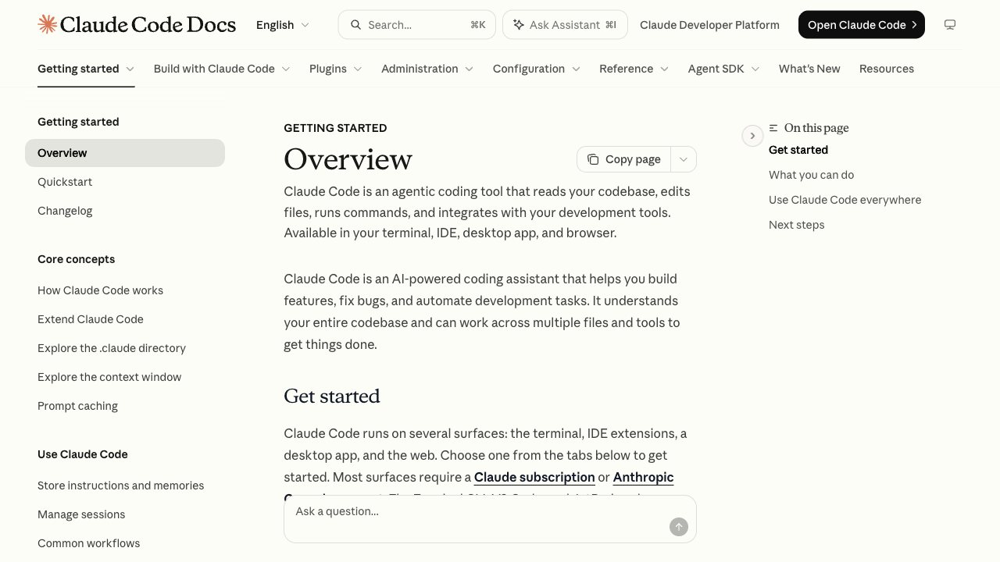

Qué es Claude Code
Claude Code es la herramienta de Anthropic que trabaja contigo en tu proyecto desde la terminal o desde el editor: lee tu código, ejecuta comandos y hace cambios. Se instala sin coste, pero necesitas un plan de pago de Claude o créditos de API; el plan gratuito del chat no lo incluye. Esta página reúne todas nuestras guías de Claude Code, en el orden en que conviene leerlas, y todas están contrastadas con la documentación oficial.
1. Empezar
- Qué es Claude Code y cómo empezar: guía paso a paso para configurarlo y automatizar tareas reales.
- Instalar Claude Code: el comando exacto para Mac, Linux y Windows, y qué necesitas antes.
- Comandos de Claude Code: la chuleta con botón de copiar: /login, /logout, /usage y más.
- Modos de permisos y modo plan: cuánto te pregunta Claude y cómo revisar antes de que toque nada.
2. Darle memoria
- CLAUDE.md: el archivo donde le explicas tu proyecto una sola vez.
3. Usarlo cada día
- Claude Code en VS Code: la extensión, el icono Spark y los atajos.
- Límite de uso: qué es la ventana de 5 horas y el tope semanal, y cómo mirar cuánto llevas.
- Seguir al llegar al límite con freellmapi: modelos gratis que continúan tu conversación; no son Claude.
- Claude Code con Ollama: modelos locales para no gastar cuota.
- Ollama paso a paso: IA en tu ordenador, gratis y sin internet.
4. Ampliarlo
- MCP: conecta Claude Code a herramientas externas.
- Hooks: comandos que se ejecutan solos en el momento que eliges.
- Crear una skill: instrucciones que se cargan solo cuando hacen falta.
- Las mejores skills: una selección para instalar ya.
- Subagentes: asistentes con su propio contexto.
Cómo usar esta página
No hace falta leerlo todo. Con las cuatro guías de la etapa 1 y CLAUDE.md ya puedes trabajar a diario. Lo de la etapa 4 solo compensa cuando notas que repites algo a mano. Lo que cambia con frecuencia, como límites o precios, lo marcamos en cada guía con su fecha.
Preguntas frecuentes
¿Qué es Claude Code?
Una herramienta de Anthropic que trabaja contigo en tu proyecto desde la terminal o el editor: lee tu código, ejecuta comandos y hace cambios.
¿Claude Code es gratis?
El programa se instala sin coste, pero necesitas un plan de pago de Claude o créditos de API; el plan gratuito del chat no lo incluye.
¿Por dónde empiezo con Claude Code?
Por instalarlo, aprender los comandos básicos y elegir un modo de permisos. Después crea un CLAUDE.md para que recuerde tu proyecto.
¿Qué hago cuando llego al límite de uso?
Puedes esperar a que se renueve la ventana, mirar cuánto llevas con /usage o seguir con modelos gratis o locales, aunque estos no son Claude.
¿Cómo amplío lo que puede hacer Claude Code?
Con MCP para conectar herramientas, hooks para automatizar acciones, skills para cargar instrucciones cuando hacen falta y subagentes para tareas con su propio contexto.